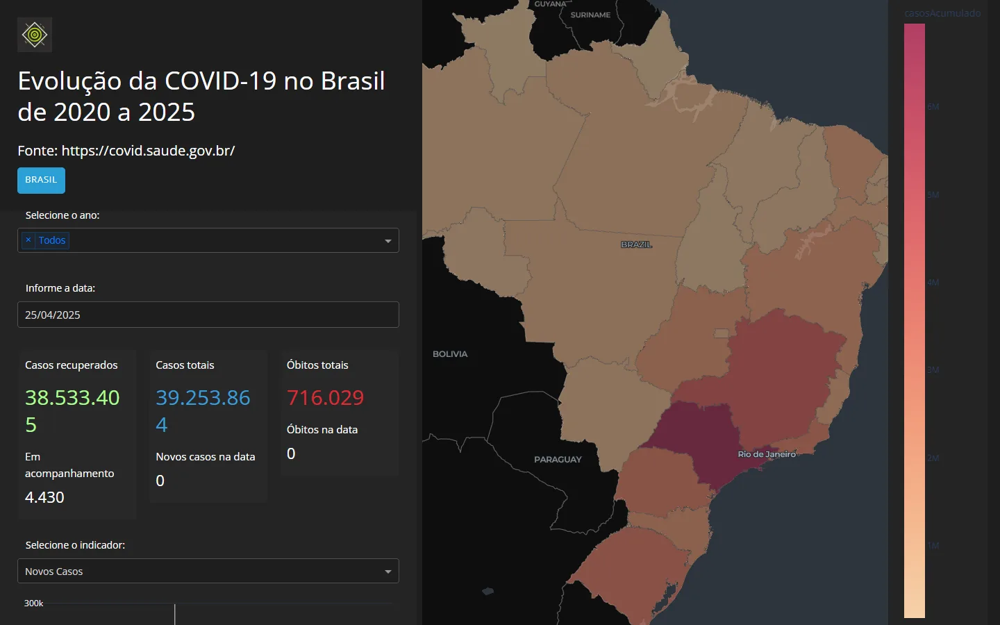
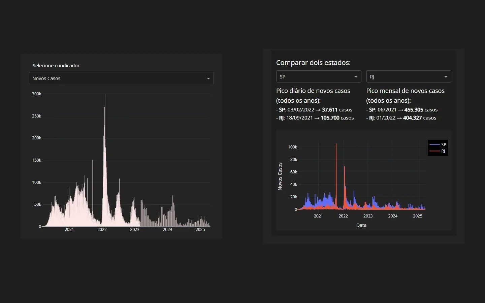
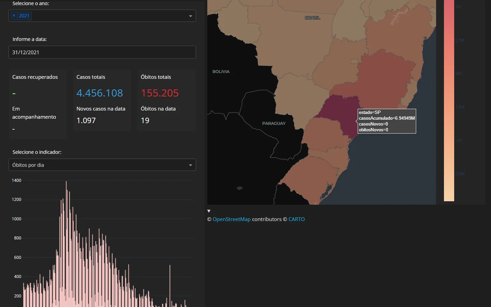

Painel da COVID-19
Painel interativo com a evolução da COVID-19 no Brasil e nos 27 estados, de fevereiro de 2020 a abril de 2025, a partir do arquivo público do Ministério da Saúde.
- Fonte
- Ministério da Saúde
- Período
- 25/02/2020 a 25/04/2025
- Unidade
- Brasil e 27 UFs
39.253.864casos acumulados no Brasil
716.029óbitos acumulados
1.887dias na série
Telas
Capturas do painel rodando com os dados públicos do repositório.






Fluxo de uso
Entrada
Página únicacontroles à esquerda, mapa à direita
Filtros
LocalBrasil ou UF clicada no mapa
Anoum ou mais, de 2020 a 2025
Datadia exato dos cartões e do mapa
Resultados
Cartõescasos, óbitos, recuperados, em acompanhamento
Sériecasos ou óbitos, acumulado ou por dia
Mapacasos acumulados por UF
Comparaçãodois estados e seus picos
Dados e processamento
Casos novos por ano
2025 até 25 de abril.
Achados
298.408
casos novos em 3/2/2022, maior valor diário no Brasil
4.249
óbitos em 8/4/2021, maior valor diário no Brasil
424.107
óbitos em 2021, 59% dos 716.029 da série
455.305
casos em São Paulo em 06/2021, maior mês do estado
Óbitos por ano
Óbitos novos por ano, Brasil
2025 até 25 de abril.
Funcionalidades
- MapaMapa coroplético por UF; o clique troca o local de todos os gráficos.
- PeríodoFiltro de um ou mais anos e seletor de data em formato DD/MM/AAAA.
- IndicadoresCasos acumulados, casos novos, óbitos totais e óbitos por dia.
- ComparaçãoDois estados lado a lado, com o dia e o mês de maior número de casos.
Tecnologias
PythonpandasDashPlotly